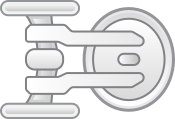

FRAME_01
PACIFIC AFTERBURN
A synthetic sunset memory reconstructed from west coast road logs and horizon telemetry.
Solo trip through the western 3 states. Navigated CA, AZ, and NM using Tesla Model Y 2026. Captured the essence of desert highways and open-sky terrain through precision landscape data.
Deployment finalized: Move to USA. Established a permanent operational node for transcontinental surveys and technological research.
Initiated Musical.ly protocol. Architected the core interface of a global synchronization network, redefining social rhythm and connectivity.
Biological unit expansion: Welcomed a lovely son into the exploration fleet. Recalibrating mission priorities for a multi-generational journey.
Core alliance formed: Marry my lovely wife. Synchronized trajectories to navigate the complexities of the terrestrial and celestial realms together.


Solo trip through the western 3 states. Navigated CA, AZ, and NM using Tesla Model Y 2026. Captured the essence of desert highways and open-sky terrain through precision landscape data.
Deployment finalized: Move to USA. Established a permanent operational node for transcontinental surveys and technological research.
Initiated Musical.ly protocol. Architected the core interface of a global synchronization network, redefining social rhythm and connectivity.
Biological unit expansion: Welcomed a lovely son into the exploration fleet. Recalibrating mission priorities for a multi-generational journey.
Core alliance formed: Marry my lovely wife. Synchronized trajectories to navigate the complexities of the terrestrial and celestial realms together.
Hidden layer recovered. The system briefly leaves deep space mode and reveals a warm afterimage archive: unfinished sketches, impossible coordinates, and private mission fragments that only surface after a controlled stellar collapse.
Build interfaces that feel fast before they are measured as fast. The user trusts atmosphere before they trust throughput charts.
Warm theme anomaly opened near the Pacific edge. Signal strength: unstable. Visibility window: a few seconds only.
Earth was dragged into the stellar core. Rewinding the scene, restoring orbital history, and rebuilding the system from a known-good epoch.
